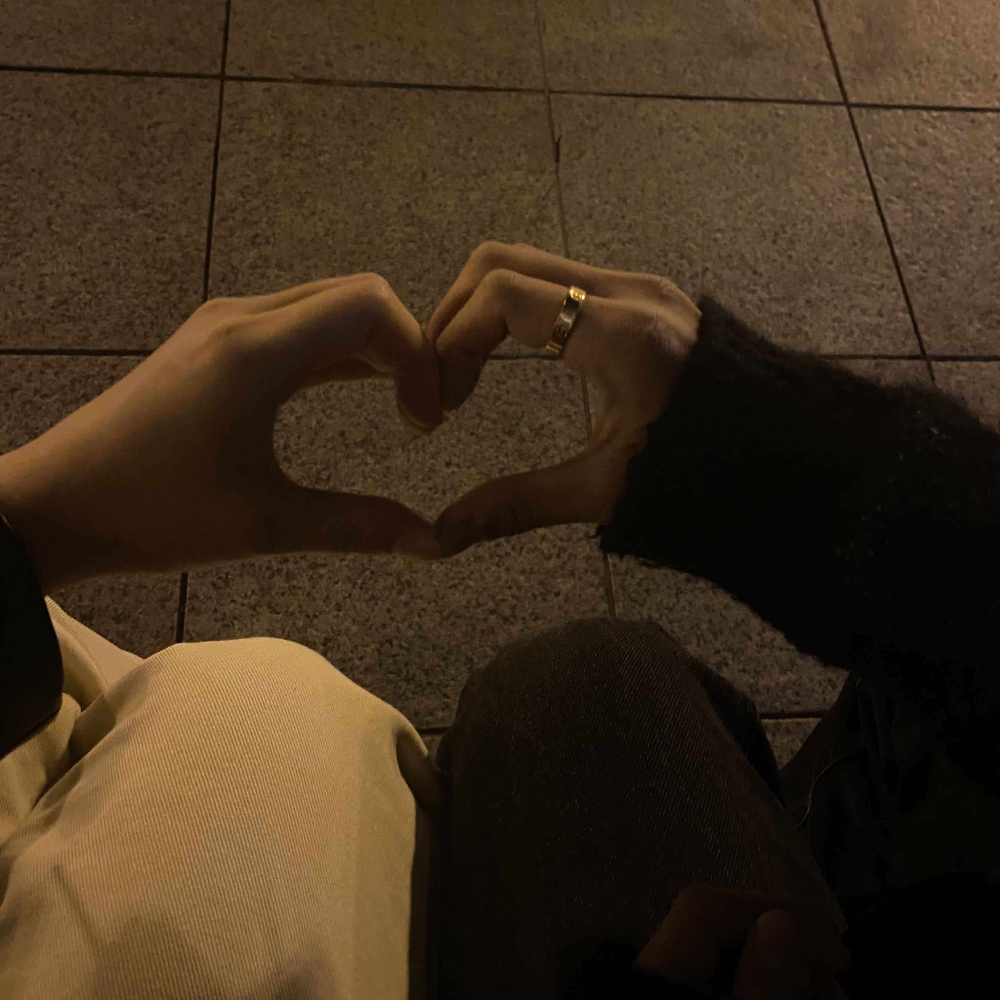
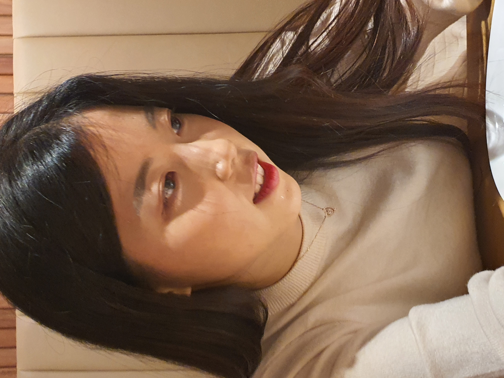
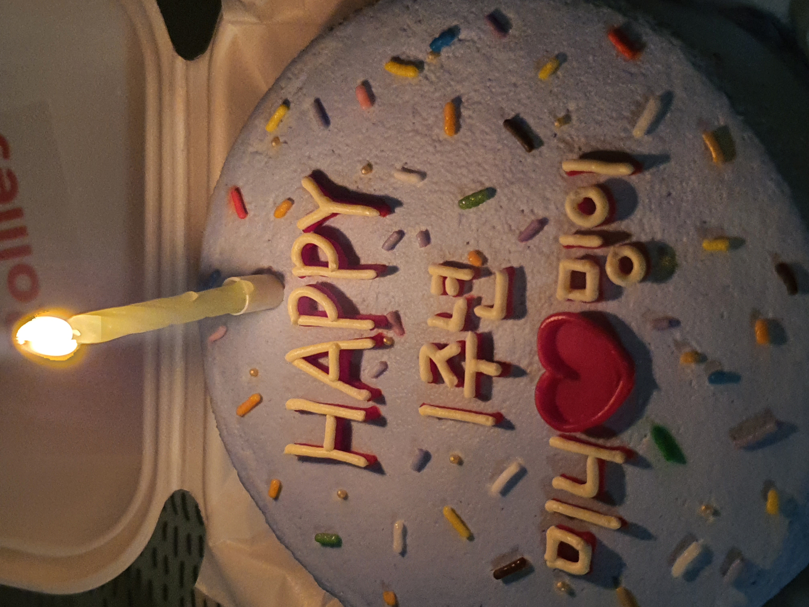
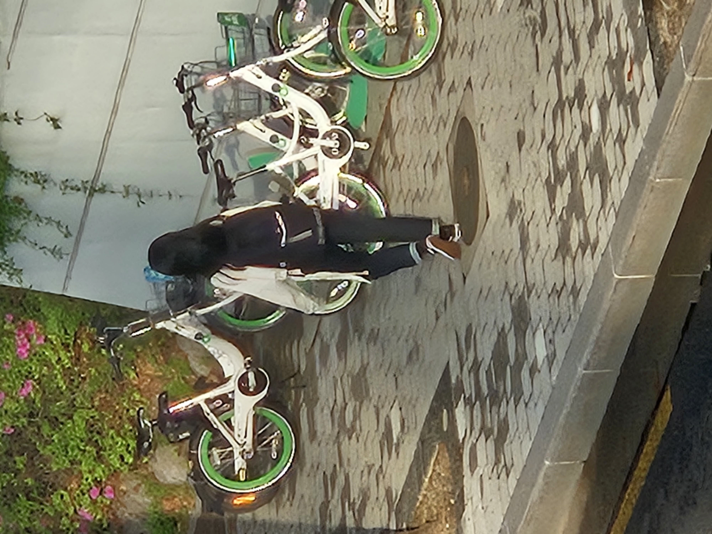
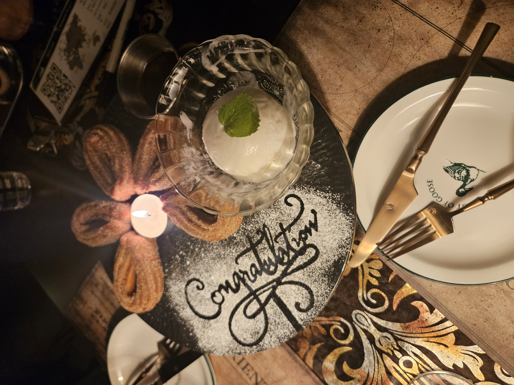
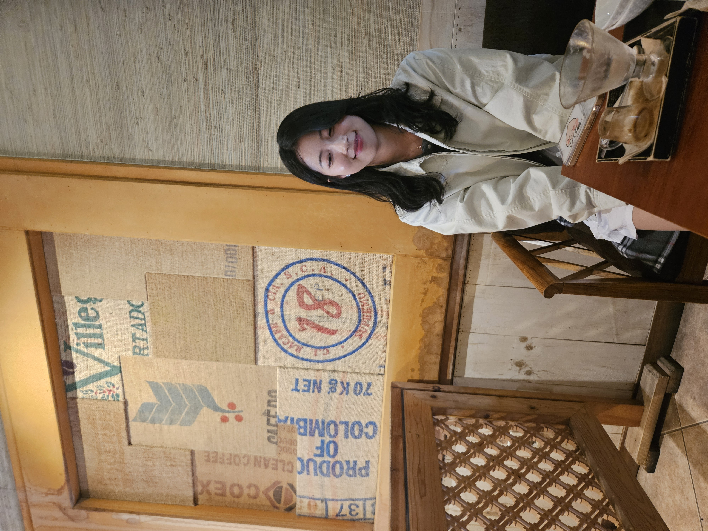

- n주년
- 여행
N주년
2021.04.15.목요일

참고로 이 사진은 4월 16일 사진이야 ㅎ 당일 사진이 없어서 이 사진을 준비해봤어. 여기는 어딜까?? 여기는 예술의 전당이야 ㅎㅎ 우리가 초기에 데이트를 많이 하던 곳이지 ㅎㅎ 각설하고, 우리는 4월 15일에 내가 서초구 언덕이 높은 공원 정자에서 시작했어. 그때 너무 떨려서 거의 1시간동안 고백 멘트도 못꺼내고 어리숙하게 했던 기억이 나 ㅎㅎ 밍이가 감사히도 내 손 잡아주어서 우리의 장엄한 시작이 이루어진거야 ㅎㅎ 우리 날짜로는 지금 벌써 1500일을 가까이 향해가고 있는데 우리의 처음은 아직도, 평생 잊히지 않을 것 같아요...
2022.04.15

1주년이에요 ㅎㅎ 무사히 1주년을 완수한 모습이야. 밍이가 감사히도 준비해준 주문 제작 케이크도 너무 기억에 남아용ㅎㅎ 바나나맛도 났던 것 같구 고마워 밍이... 우리 이 날에 나는 다로베에 가서 맛있는 트러플 피자 먹은 기억이 강렬이 있어.. 그런데 사진첩을 살펴보니 이날에 이태리 부대찌개에서 2차?도 했더라궄ㅋㅋㅋㅎㅋ 잘 먹었어 우리. 우리가 시작부터 1년을 함께 하면서 큰 위기 없이 잘 지냈다는 점이 나는 정말 다행스럽고 잘한 점이라고 생각해. 해부부터 본과 공부까지 이어지는 시작점에 있었던 만큼 더 바쁜 생활 속에서 더 의지도 되고 더 사랑이 깊어졌던 것 같아요.
2023.04.15

2주년은 본과 2학년일 때인데, 엄청 바빴나봐요. 아마 시험기간이었나봐. 우리가 따로 놀러간 사진도 없고 그래서 내가 밍이를 찍은 사진만 남겨보았어. 본과 2학년때 내가 많이 힘들어하면서 밍이한테 짐을 많이 얹었던 것 같아서 미안한 마음이 커. 그래도 밍이를 매번 꼬셔서 어디 놀러가자 어디 구경가자 뭐 먹으러가자 해서 힘든 상황 속에서 더 빛이 나는 추억들을 많이 남길 수 있었던 것 같아서 다행이에요. 생각보다 2주년은 그냥 흘러간 것 같아서 지나고 보니 후회가 남네... 그때 뭐라도 해서 밍이와의 추억을 더 남겼으면 더 좋았을 것 같은데..
2024.04.15

3주년이에요! 우리가 원래라면 학교를 갔어야 했는데 안좋은 상황때문에 학교는 안가고 같이 놀기만 해서 오히려 나는 좋던 시기였어. 3주년 당일날은 내가 호기롭게 기러기둥지 예약을 했다고 말하고 여러 문제가 있었지. 지점에 대한 착각?? 같은거로 문제가 있었지 아마? 이게 3주년이 맞는거 같은데. 어쨌든 잘 찾아서 용산점이라 적혀있는데 이태원에 있는 기러기 둥지에서 정말 말도안되게 맛있는 음식과 포트와인을 즐기면서 행복한 기념일을 보냈던 기억이 있어요 ㅎ 우리 3주년까지는 그래도 큰 트러블 없이 순항했던 것 같아요... 3주년 이후 서울에서 쭉 지내면서 맛있는 것들도 많이 먹고 좋은 곳들 구경, 그냥 어떻게든 다채롭게 놀려고 노력하던 모든 기억들이 추억으로 남았어.
2025.04.15

우리의 이번 4주년 여행은 정말 순탄하고 즐거웠어 ㅎㅎ 이번에 광주에서 보냈던 시간의 속도는 정말 너무 빨라서 야속한 정도였으니깐...ㅎ 속상한게 많아서 밍이에게 원망의 말을 많이 담았던 페이지인데 이번 여행을 통해서 그런 것들이 치유되고 더 단단해질 수 있어서 좋았어. 밍이 집도 구경해보고 밍이가 살았던 동네를 구경하니깐 뭔가 기분이 몽글몽글하고 더 밍이랑 가까워진 느낌이 들어서 좋아용 방탈출도 이번에는 큰 트러블 없이 잘 해내서 다행이양 ㅎㅎㅋㅋㅋㅎ 앞으로 우리 다양한 지역에서 방탈출도하고 밍이가 좋아하는 노래방도 가고 재밌게 지내보자 ㅎㅎ 사랑해 밍아기 4주년에 밍이가 점심식사도 대접해주고 고마워용 ㅎㅎㅋㅎㅎ 참고로 밍이 표정이 귀여워서 커피공방 사진을 업로드했엉. 이제 5월에 볼텐데 그때까지 조금만 참아용 밍이 ㅎㅎ 나도 조금만 참을게 사랑해요!!